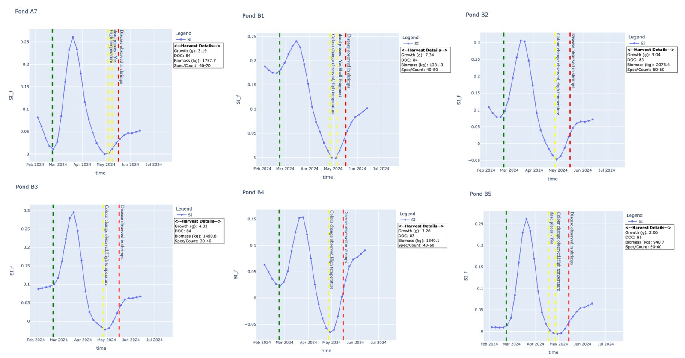
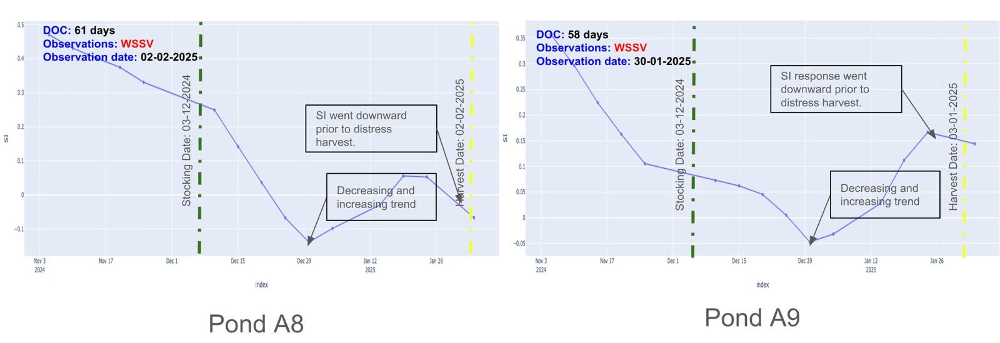
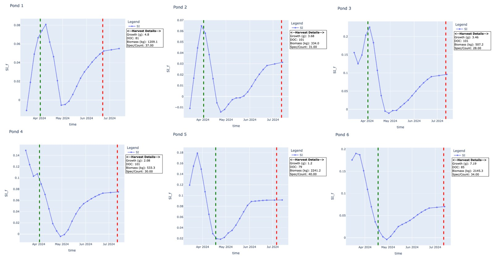

Research · spectral index
Shrimp Index (SI)
Remote sensing had no index for shrimp farming. This work derives one — a number that quantifies what is happening inside a shrimp pond, from orbit.
- Role
- Spectral analysis
& index derivation - Sensor
- Sentinel-2 MSI L2A
12 bands · ~5-day revisit - Method
- Multi-temporal &
mono-temporal analysis - Bands
- RE3 (783 nm)
SWIR (1610 nm) - Ground truth
- Field reports
via WhatsApp & Metabase
The problem
There is no remote sensing index related to shrimp farming. Without one, satellite imagery cannot really be used to monitor shrimp ponds — you can see the water, but you cannot measure the culture. The proposal was a Shrimp Index (SI) that captures the distinctive spectral response of shrimp ponds and supports monitoring and management at scale.
My role
Studying the spectral signatures of aquaculture ponds across different geographic regions, and comparing them against other water bodies.
Research objectives
- Multi-temporal spectral analysis at pond level, to understand the phenology of different ponds.
- Mono-temporal spectral response analysis of ponds at different phenological stages, to understand response across wavelengths of the electromagnetic spectrum.
Data
| Source | What it gives |
|---|---|
| Sentinel-2 AWS & Planetary Computer |
Imagery across 12 spectral bands at roughly a five-day revisit, enabling continuous observation of the phenological and environmental changes associated with shrimp farming. |
| Ground truth WhatsApp & Metabase |
Field information from farms, used to validate and improve the insights drawn from geospatial analysis. |

What the signatures showed
Detailed multi-temporal and mono-temporal analysis was carried out at pond level across several farms, alongside other water bodies. Three findings held consistently:
- A significant increase in reflectance in the Red Edge band across all ponds during culture — evidence of phytoplankton activity.
- Following the red edge response, strong reflectance in the NIR band. In water bodies, higher NIR reflectance indicates increased suspended material; in an aquaculture pond that is a strong indicator of shrimp and feed.
- The spectral responses of water bodies other than shrimp ponds were completely different — which is what makes a species-specific index possible in the first place.
Further plots and analysis: spectral analysis deck ↗
The index
SI is a numerical value that quantifies the properties of ponds under shrimp culture. It is used to measure shrimp health and other dynamics of the culture pond using remotely sensed data.
RE3 is reflectance in the Red Edge band; SWIR is reflectance in the shortwave infrared band.
| Value | Interpretation |
|---|---|
| High SI | Healthy shrimp, with active photosynthesis aerating the pond. |
| Low SI | Distressed shrimp, or no culture in the pond at all. |
SI over time
The value on its own matters less than its trajectory. Tracked across a culture cycle, the index separates healthy ponds from failing ones well before the difference is visible on the ground.



Conclusion
The SI pattern was studied across different geographic regions. It showed a downward trend in the majority of diseased or unhealthy ponds, and an upward trend in healthy ponds — a consistent enough signal to build an alert system on, which became SIRAS / EWIS.